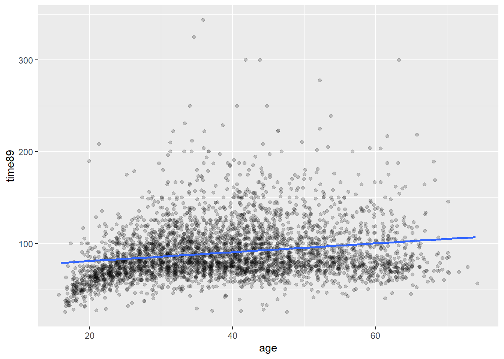

library(tidyverse)
library(gtsummary)8 Regresjon: Sammenheng mellom variable
Vi skal her se på helt grunnleggende lineær regresjon med en og to forklaringsvariable.
8.1 Scatterplot
Bivariat regresjon beskriver sammenhengen mellom to variable. En naturlig start er å se på et scatterplot. Her er en figur som viser hvordan timelønn varierer med alder. I det nedenforstående er det brukt jitter og gjennomsiktig farge for å håndtere overplotting.
I tillegg er det tegnet inn en linje som illustrerer trenden i gjennomsnittlig lønn med alder. Denne linjen skrår svakt oppover, som altså betyr at gjennomsnittlig lønn øker noe med alder. Vi ser med det blotte øyet at en rett linje ikke beskriver denne sammenhengen perfekt. Først og fremst er det en stor variasjon rundt denne linjen, så det er mye annet som påvirker lønna enn alder. Det er også verd å legge merke til at i de yngste aldersgruppene er lønna en god del lavere - og kanskje litt lavere i eldste aldersgrupper også. Så en rett linje er kanskje ikke optimalt i utgangspunktet. Fordelen med en rett linje er at vi kan si noe slikt som at “gjennosmsnittslønna øker med x antall kroner for hvert år eldre man blir”. Hvis linja er kurvlineær blir det litt mer komplisert. Så et første poeng er at en slik linje er en forenkling, og det er en tilsiktet forenkling.
ggplot(abu89, aes(x =age, y = time89))+
geom_jitter(alpha = .2)+
geom_smooth(method = "lm", se = FALSE)
Det er en viss tendens til at lønnen øker med alder, men det er ikke helt lett å si hvor mye. Poenget med lineær regresjon er å beskrive en gjennomsnittlig trend.
ggplot(abu89, aes(x =age, y = time89))+
geom_jitter(alpha = .2)+
geom_smooth(method = "lm", se = FALSE)
Denne trendlinja er hva vi vanligvis kaller regresjonslinje.
8.2 Regresjonslinja
Regresjonslinja kan beskrives med et stigningstall, som sier hvor bratt linjen er. Substansielt sett betyr det hvor mye utfallsvariabelen (y-aksen) endres med økning i forklaringsvariabelen (x-aksen). I tillegg trenger vi også vite hvor høyt/lavt linjen ligger. 1. Til det bruker vi startpunktet for linjen, der hvor \(x\) har verdien 0. Dette må regnes ut, og det er akkurat dette estimering av lineær regresjon gir oss.
Utregningen av regresjonslinja går vi ikke inn på her, men intuitivt sett ønsker vi jo den beste linja og ikke en hvilken som helst omtrentlig linje. Datapunktene (de svarte punktene i grafen) er spredt rundt linja, og avstanden mellom linje og punkt kalles residualer. Summen av disse residualene er grunnlaget for mål på hvor godt regresjonslinja beskriver de faktiske dataene. Den beste linja er definert som den som minimerer residualene. Det er dette som kalles “minste kvadraters metode”.
I R estimeres regresjonsmodeller med funksjonen lm. Første argument er en formel på formen utfallsvariabel ~ forklaringsvariabel. Rekkefølgen variablene oppgis i er altså viktig. Dernest må det spesifiseres hvilket datasett som skal brukes med data =. 2.
Legg alltid resultatene i et eget objekt med et navnt som er rimelig enkelt å forstå hva er. I følgende kode legges resultatet i en nytt objekt lm_est1. Deretter bruker kan man hente ut de delene av resultatet vi er interessert i. I aller første omgang er bare interessert i regresjonslinjas konstantledd (startpunktet) og stigningstall. Disse kaller vi vanligvis regresjonskoeffisienter. Det kan vi få ut ved å bruke funksjonen coef.
library(equatiomatic)
lm_est1 <- lm(time89 ~ age, data = abu89)
summary(lm_est1)
Call:
lm(formula = time89 ~ age, data = abu89)
Residuals:
Min 1Q Median 3Q Max
-69.287 -19.131 -6.304 12.864 255.258
Coefficients:
Estimate Std. Error t value Pr(>|t|)
(Intercept) 71.11019 1.62232 43.83 <2e-16 ***
age 0.48284 0.03926 12.30 <2e-16 ***
---
Signif. codes: 0 '***' 0.001 '**' 0.01 '*' 0.05 '.' 0.1 ' ' 1
Residual standard error: 29.73 on 3757 degrees of freedom
(368 observations deleted due to missingness)
Multiple R-squared: 0.0387, Adjusted R-squared: 0.03844
F-statistic: 151.2 on 1 and 3757 DF, p-value: < 2.2e-16coef(lm_est1)(Intercept) age
71.1101883 0.4828415 Regresjonslingningen kan skrives på formel der \(\alpha\) er konstantleddet og \(\beta\) er stigningstallet slik:
extract_eq(lm_est1, use_coefs = FALSE)\[ \operatorname{time89} = \alpha + \beta_{1}(\operatorname{age}) + \epsilon \]
Når vi setter inn de estimerte koeffisientene inn i ligningen får vi følgende:
extract_eq(lm_est1, use_coefs = TRUE)\[ \operatorname{\widehat{time89}} = 71.11 + 0.48(\operatorname{age}) \]
Tolkningen her er at gjennomsnittlig forskjell i timelønn mellom grupper der aldersforskjellen er ett år er 0.48 kroner i favør av den eldre gruppen.3 Merk enheten her: stigningstallet tolkes på den skalaen utfallsvariabelen er på, i dette tilfellet kroner. Det er også uttrykt endring ved at forklaringsvariabelen endres med nøyaktig 1.
Vi sier gjerne at regresjonslinjen er estimert, og det innebærer at det er usikkerhet i estimatene. Vi kommer tilbake til dette, men en vanligere output fra regresjonsmodeller er å bruker summary som følger:
summary(lm_est1)
Call:
lm(formula = time89 ~ age, data = abu89)
Residuals:
Min 1Q Median 3Q Max
-69.287 -19.131 -6.304 12.864 255.258
Coefficients:
Estimate Std. Error t value Pr(>|t|)
(Intercept) 71.11019 1.62232 43.83 <2e-16 ***
age 0.48284 0.03926 12.30 <2e-16 ***
---
Signif. codes: 0 '***' 0.001 '**' 0.01 '*' 0.05 '.' 0.1 ' ' 1
Residual standard error: 29.73 on 3757 degrees of freedom
(368 observations deleted due to missingness)
Multiple R-squared: 0.0387, Adjusted R-squared: 0.03844
F-statistic: 151.2 on 1 and 3757 DF, p-value: < 2.2e-16Da får vi også mye informasjon knyttet til usikkerheten på estimatene, primært standardfeil, p-verdier og konfidensintervaller. Du finner koeffisientene under kolonnen “Estimate”.
8.3 Flere variable
8.4 Eksport av resultater til fil
Vi vil som regel ha behov for å flytte resultatene over til et tekstbehandlingsprogram. En strategi som går ut på “klipp og lim” eller skjermbilde etc er uaktuelt og unngå det for nærmest enhver pris.4 Resultatene skal skrives til en fil på en effektiv måte. Det er en fordel om tabellene da ser ganske ok ut i utgangspunktet og du kan bruke samme prosedyre for å eksportere til flere typer format hvis behovet skulle melde seg. Det er jo MS Word som er viktigst for dere, mens de øvrige formatene nedenfor er for spesielt interessert - men noen av dere vil kanskje bli det på et senere tidspunkt.
Her presenteres noen pakker som eksporterer til de viktigste formatene som er:
- MS Word - det vanligste tekstbehandlingsprogrammet som de aller fleste av dere bruker.
- rtf - rikt tekstformat. Er et enklere format som fungerer på tvers av de fleste programmer. Kan brukes i Word også.
- html - for websider
- latex - for mer tekniske dokumenter, særlig hvis du har mye formler og stæsj
- Markdown - for dynamiske dokumenter med integrert R-kode og tekst, og kan eksportere ferdig dokument til alle ovennevnte formater5 Det som fungerer med Markdown fungerer også med Quarto for samme formål.
8.4.1 Alt 1: Bruke modelsummary()
Eksporterer til bl.a. følgende formater: Word, rtf, html, latex, markdown
Fordel: Kan lett integreres med andre funksjoner, først og fremst “grammar of tables” i pakket gt Ulempe:
8.4.2 Alt 2: Bruke stargazer()
Eksporterer til bl.a. følgende formater: rtf, html, latex, markdown
Fordel: Er en stand-alone pakke men gir enkelt veldig fine tabeller som antakeligvis er det du trenger Ulempe: Eksport til Word er ikke den beste, men god nok.
8.4.3 Alt 3: Bruke gtsummary()
Eksporterer til bl.a. følgende formater: Word, rtf, html, latex, markdown
Fordel: Kan lett integreres med andre funksjoner, først og fremst “grammar of tables” i pakket gt. Bruker samme rammeverk som for deskriptive tabeller med tbl_summary. Ulempe: Litt mer mikk-makk enn modelsummary og stargazer
Du kan jo tenke deg flere parallelle linjer i plottet ovenfor med samme stigningstall↩︎
Grunnen til det siste er at R kan ha flere datasett oppe samtidig, så R vet ikke nødvendigvis hvilket datasett du tenker på↩︎
Noen ganger sier man at gjennomsnittslønna øker med 0.48 kroner for hvert år eldre man blir. Men det er ikke helt riktig, for dataene beskriver jo ikke individuell endringer over tid! Men hvis du synes det er lettere å tenke på det på den måten er det ok - men prøv å husk at det også er litt feil.↩︎
Hvis du blir tatt i å gjøre slikt vil faglærer sette fyr på datamaskinen din som straff.↩︎
F.eks. dette dokumentet er skrevet i Quarto↩︎